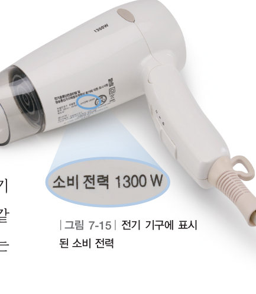
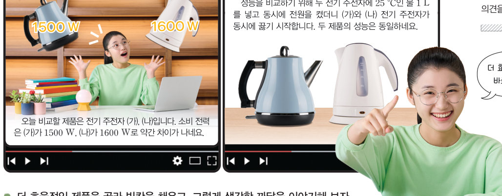
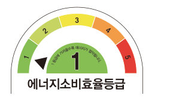

살아있는 교과서 · Ⅶ. 전기와 자기 · 2. 전기 회로와 에너지 · 04 246~250쪽
전기 에너지의 전환과 소비 전력
선풍기와 전기난로는 전기 에너지를 어떻게 사용할까? 전기 기구의 에너지 전환을 분류하고, 두 전기 주전자를 가상으로 끓여 소비 전력을 비교한 뒤, 전기 에너지를 효율적으로 사용하는 방법을 제안해 보자.
🎯 이 단원을 배우면 — 일상생활에서 전기 에너지가 다양한 형태의 에너지로 전환됨을 소비 전력과 관련지어 설명할 수 있다.
교과서일상생활에서 전기 에너지를 어떤 에너지로 전환하여 사용할까? 246쪽
선풍기에 전원을 연결하면 선풍기의 날개가 돌아간다. 이것은 선풍기에 전류가 흐르면서 에너지를 공급하기 때문이다. 전기 기구에 전류가 흐르면서 공급하는 에너지를 전기 에너지라고 한다. 일상생활에서는 전기 에너지를 운동 에너지, 열에너지, 빛에너지 등 다양한 형태의 에너지로 전환하여 사용하고 있다.
그림 7-14전기 에너지를 전환하여 사용하는 예
1각 전기 기구에서 전기 에너지는 주로 어떤 에너지로 전환될까?
전등
컴퓨터 모니터
세탁기
청소기
전기 주전자
전기밥솥
🧩 두 번째 블록 조각
공기 청정기는 공기 중의 먼지를 모으기 위해 전기 에너지를 로 전환하여 사용한다.
교과서소비 전력 247쪽
전기 기구 중에는 전기 에너지를 많이 사용하는 것도 있고 적게 사용하는 것도 있다. 어떤 전기 기구가 전기 에너지를 더 많이 사용하는지는 일정한 시간 동안 사용하는 전기 에너지의 양을 비교하면 알 수 있다. 전기 기구가 1 초 동안 사용하는 전기 에너지의 양을 소비 전력이라고 하며, 단위는 W(와트)를 사용한다. 대부분의 전기 기구에는 소비 전력이 표시되어 있어서 그 전기 기구가 일정한 시간 동안 사용하는 전기 에너지의 양을 알 수 있다.

그림 7-15전기 기구에 표시된 소비 전력
1소비 전력이 1300 W인 헤어드라이어는 1 초 동안 만큼의 전기 에너지를 사용한다(단위 생략). 이 드라이어를 10 초 동안 사용하면 1 초 동안 사용할 때의 배의 전기 에너지를 사용한다.
2소비 전력이 1000 W인 전기밥솥을 1 시간 사용할 때와 소비 전력이 500 W인 세탁기를 시간 사용할 때 사용하는 전기 에너지의 양이 같다.
해 보기 · 협력적 소통하기전기 기구의 소비 전력 비교하기 247쪽

247쪽성능을 비교하기 위해 두 전기 주전자에 25 °C인 물을 1 L 넣고 동시에 전원을 켰더니 (가)와 (나) 전기 주전자가 동시에 끓기 시작한다. 소비 전력은 (가)가 1500 W, (나)가 1600 W이다.
가상 실험두 전기 주전자 끓이기
[동시에 전원 켜기]를 누르고 물이 끓을 때까지 두 주전자가 사용한 전기 에너지(1 초마다 소비 전력만큼 쌓임)를 비교해 보자. 화면 속 시간은 실제보다 빠르게 흘러요.
1두 주전자의 성능(물을 끓이는 데 걸린 시간)이 같으므로 같은 시간 동안 전기 에너지를 더 적게 사용한 전기 주전자가 더 효율적인 제품이다.
💬더 효율적인 제품을 고른 까닭을 이야기해 보자.
선풍기를 사용할 때 날개가 회전하면서 소리가 나고 열이 발생하는 것처럼 전기 기구에서 전기 에너지는 주된 용도의 에너지 외에도 다른 형태로 전환되어 손실되기도 한다. 성능이 같은 전기 기구여도 다른 형태로 전환되어 손실되는 에너지가 많으면 더 많은 전기 에너지를 필요로 하기 때문에 소비 전력이 크다. 따라서 성능이 같을 때 소비 전력이 작은 전기 기구를 사용하면 전기 에너지를 효율적으로 사용하여 절약할 수 있다.
탐구 · 실천적 대안 마련하기여러 가지 전기 기구의 에너지 전환과 소비 전력 조사하기 248~249쪽
전기 에너지를 생산하는 일부 과정에서는 이산화 탄소 등의 온실 기체가 발생하며, 이는 지구 온난화와 같은 환경 문제를 일으킨다. 이러한 환경 문제를 완화하기 위해서는 전기 에너지를 효율적으로 사용하여 온실 기체 배출을 줄이는 것이 중요하다.
조사 스프레드시트우리 반이 조사한 전기 기구
전기 기구를 눌러 표에 넣으면 소비 전력이 큰 것부터 자동으로 정렬돼요. 5 가지 이상 넣어 보자.
1소비 전력이 큰 전기 기구들(전기난로, 전기 주전자, 헤어드라이어, 전기밥솥)은 전기 에너지를 주로 로 전환한다.
💬실천적 대안 마련 가정에서 전기 에너지를 효율적으로 사용할 수 있는 방법을 2 가지 이상 제안해 보자.
더 알아보기 · 에너지 소비 효율 등급

전기 기구에 공급한 전기 에너지 중 필요한 에너지로 전환되는 비율을 에너지 효율이라고 한다. 효율이 높을수록 불필요하게 낭비되는 에너지가 적다. 냉장고, 세탁기 등의 전기 기구에는 에너지 소비 효율 등급이 표시되어 있다(1등급이 가장 효율이 높다).
스스로 확인하기246쪽 학습 목표를 달성했는지 확인해 보자 249쪽
1개념 확인 전기 기구가 1 초 동안 사용하는 전기 에너지의 양을 (이)라고 한다.
2사고력 엘이디등은 밝기가 동일한 다른 조명 장치에 비해 오래 사용해도 덜 뜨거워진다. 최근 조명 장치로 엘이디등을 많이 사용하는 까닭을 에너지 효율 측면에서 설명해 보자.
5분 테스트전기 에너지의 전환과 소비 전력
1전기 기구에 전류가 흐르면서 공급하는 에너지를 라고 한다.
2전기 기구에서의 에너지 전환 — 전기 에너지 → ( )
② 전등
③ 선풍기
④ 세탁기
⑥ 전기 주전자
5전기밥솥: 에너지 → 열에너지
✔옳으면 O, 옳지 않으면 X
⑦ 소비 전력은 1 초 동안 전기 기구가 소모하는 전기 에너지이다.
⑧ 소비 전력이 클수록 같은 시간 동안 사용했을 때 소비하는 전기 에너지의 양이 많다.
⑨ 전기 기구에서 전기 에너지는 주된 용도의 에너지 외 다른 에너지로 전환되어 손실되지 않는다.
10전기 에너지를 생산하는 일부 과정에서는 이산화 탄소 등의 기체가 발생하므로, 전기 에너지를 효율적으로 사용하여 배출을 줄이는 것이 중요하다.
스스로 정리하기전기 에너지의 전환과 소비 전력 · 두 번째 블록 찾기 250쪽
3전기 에너지의 전환과 소비 전력
⑴ : 전기 기구에 전류가 흐르면서 공급하는 에너지 ⑵ : 전기 기구가 1 초 동안 사용하는 전기 에너지의 양, 단위 W(와트)
🧩 두 번째 블록 찾기 — 팬이 작동할 때 전기 회로에서 어떤 일이 일어날까?
237쪽 조각: 공기 청정기의 전원을 켜면 내부의 전기 회로에 전류가 흘러 팬이 돌아간다. · 249쪽 조각: 공기 청정기는 공기 중의 먼지를 모으기 위해 전기 에너지를 운동 에너지로 전환하여 사용한다.
🧩두 블록 조각을 이어서 두 번째 블록 질문에 답해 보자.
평가 기준
스스로 평가
지식·이해 전기 에너지의 전환을 소비 전력과 관련지어 설명할 수 있는가?
과정·기능 전기 기구에서 전환되는 에너지와 소비 전력을 옳게 조사하고 비교했는가?
가치·태도 지속가능한 사회를 위해 에너지를 효율적으로 사용하는 방안을 적극적으로 제시했는가?
제출학생 정보 · 제출하기
모든 활동을 마친 뒤 제출하면 전체가 한 번에 채점되고 피드백이 나타나요. 답안은 선생님 스프레드시트(중2 탭)에 기록돼요.